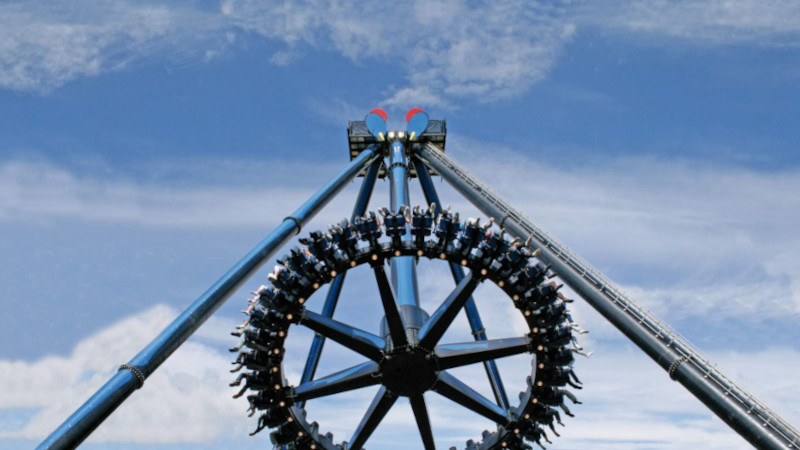
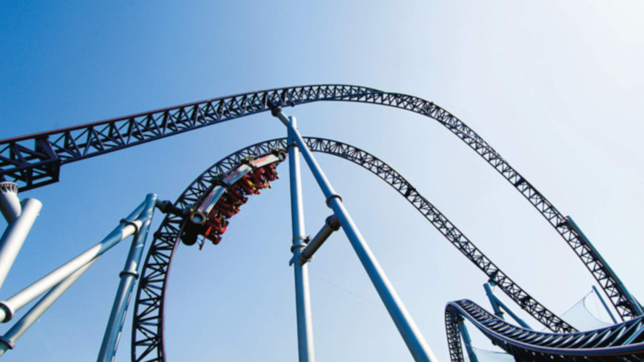

Tusenfryd
20 minutes away from Oslo, you'll find Norway largest amusement park, offering a variety of attractions for all ages.
Tusenfryd has plenty of attractions to choose from, including the famous Spinspider and SpeedMonster. We highly reccomend Tusenfryd for families.


Hint: You can click and hold on a image to make it bigger